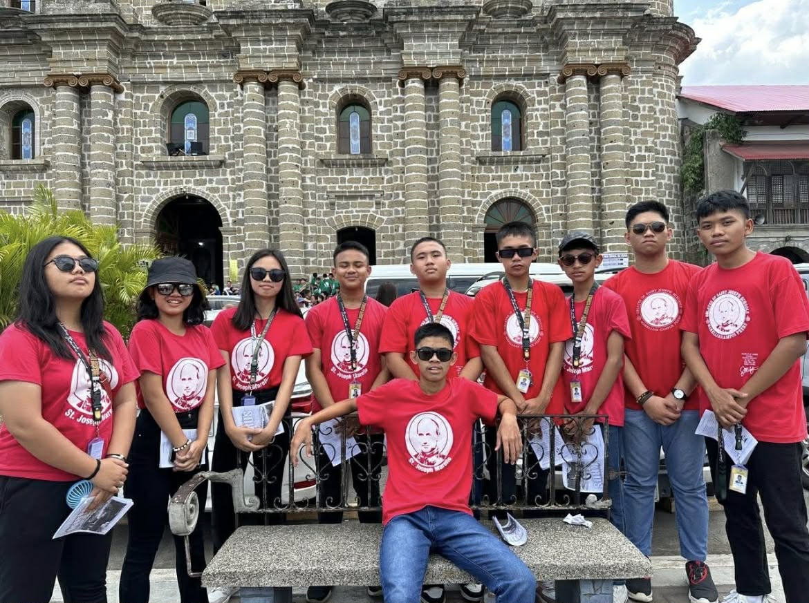
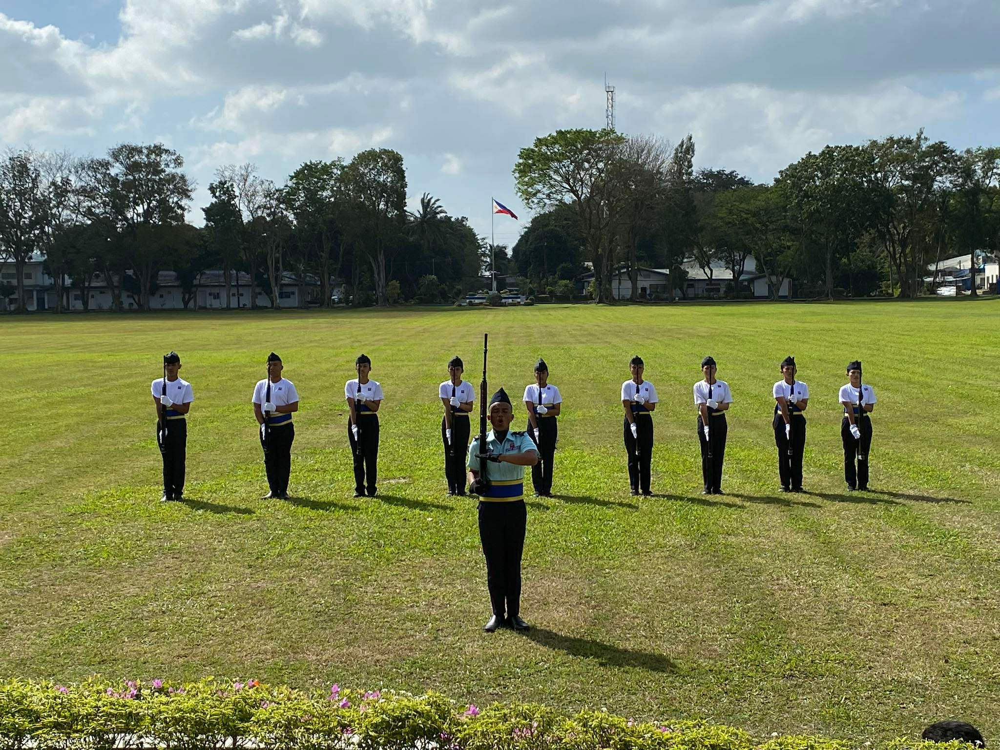
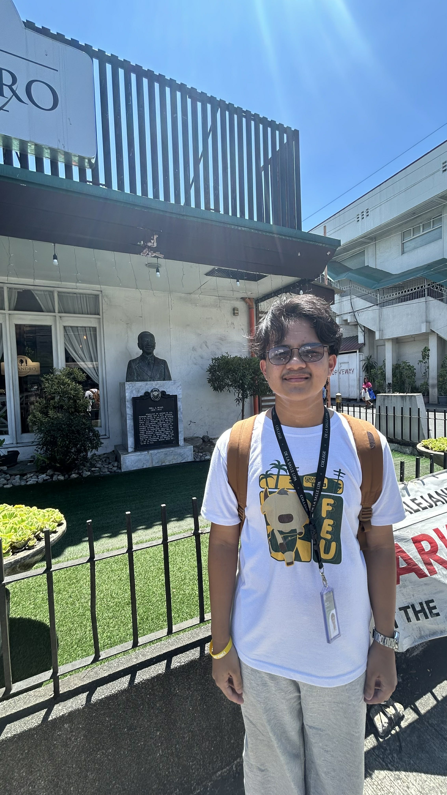
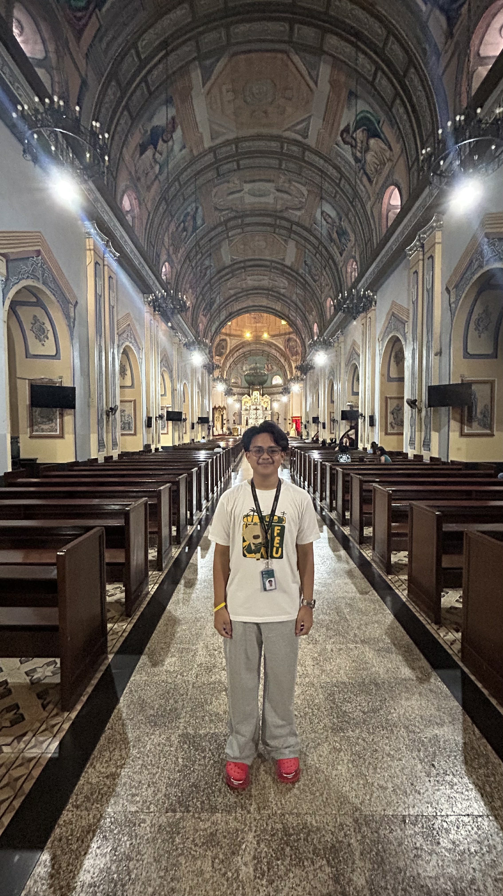
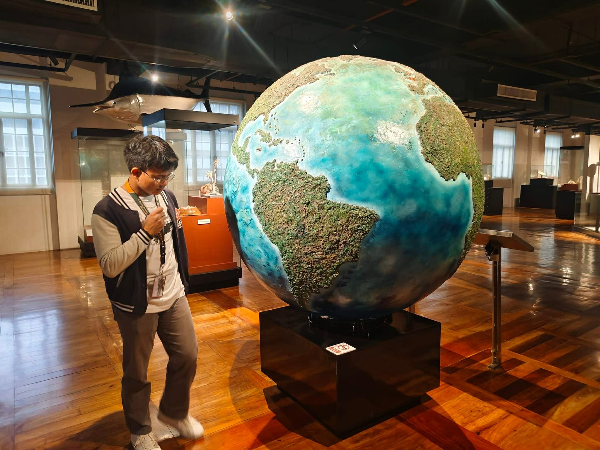

The Taal Basilica
The Taal Basilica holds an NHCP marker because it is a masterpiece of 19th-century missionary architecture and stands as the largest Catholic church in Asia. Built under the direction of Father Marcos Anton and Luciano Oliver, its current stone structure was completed in 1865 to replace earlier churches destroyed by the eruptions of Taal Volcano. Beyond its massive scale and iconic Neoclassical facade, the NHCP recognizes its role as a National Historical Landmark that symbolizes the enduring faith and resilience of the Batangueño people against natural disasters and colonial upheavals.

Immaculate Conception Parish Church
A Place in Balayan carries an NHCP marker primarily because it is one of the most well-preserved examples of Spanish colonial architecture in Batangas and was declared a National Historical Landmark in 1987. Constructed between 1748 and 1759, the church is a "Fortress Church" designed to protect the community against maritime raids, featuring massive stone walls and a distinct four-story bell tower. The NHCP recognizes it not only for its architectural integrity and its status as one of the oldest parishes in the region but also for its role as a silent witness to the social and political evolution of Balayan.

Casa de Segunda
The Casa de Segunda in Lipa City is a designated as a National Historical Landmark by the NHCP because it is the ancestral home of Segunda Solis Katigbak, who is historically recognized as the first love of Dr. Jose Rizal. Built in the 1880s, the house is a remarkably well-preserved example of the Bahay na Bato architecture that flourished during Lipa’s "Golden Age" of the coffee industry. The NHCP recognizes the site not only for its romantic connection to the national hero but also as a cultural symbol of the lifestyle and social prominence of the Batangueño elite during the late Spanish colonial period.

Fernando Air Base
Designated as an NHCP historical site primarily because of its strategic role during World War II and its status as the "cradle" of Filipino military aviation. Originally built by American forces and later occupied by the Japanese as a staging ground for Kamikaze missions, it was reclaimed during the 1945 liberation. It was eventually renamed in honor of Lt. Col. Basilio Fernando, a pioneer of the Philippine Army Air Corps. Today, the NHCP marker recognizes its institutional importance as the premier training ground for the Philippine Air Force, preserving its legacy as a site of both wartime struggle and the professionalization of national defense.

Fidel A. Reyes Marker
Installed by the NHCP (then NHI) in 1984 to honor him as a heroic nationalist journalist and one of the most daring voices during the early American colonial period. Born in Lipa, Reyes is most famous for writing the controversial 1908 editorial "Aves de Rapiña" (Birds of Prey) in the newspaper El Renacimiento, which exposed the corruption and exploitation of Philippine resources by American officials. The NHCP recognizes his courage in sparking national consciousness through his writing, despite the landmark libel suit that followed, as well as his distinguished career as a legislator and the first Filipino Director of the Bureau of Commerce and Industry.

San Sebastian Cathedral
Designated with an NHCP marker because it serves as a primary monument to the ecclesiastical history of Batangas and the city's rise during the 19th-century coffee boom. Originally established by the Augustinians, the current grand structure was completed between 1865 and 1894 under Fray Benito Varas, featuring a massive dome and a Neoclassical bell tower that dominate the city's skyline. The NHCP recognizes the cathedral for its architectural grandeur and its historical significance as the seat of the Archdiocese of Lipa, as well as its resilience in surviving natural disasters and the heavy damage sustained during World War II.

Minor Basilica and Metropolitan Cathedral of the Immaculate Conception
Designated as an NHCP historical site because it serves as the "Mother of all Churches, Colleges, and Cathedrals in the Philippines." Since its initial establishment in 1571, the cathedral has been destroyed and rebuilt eight times due to fires, earthquakes, and the total devastation of World War II during the Battle of Manila in 1945. The NHCP recognizes it as a powerful symbol of Filipino resilience and as a primary center of the Catholic faith in the country, preserving centuries of ecclesiastical history and serving as the final resting place for several Philippine archbishops.

Saint Mary Magdalene Parish
Designated with an NHCP marker primarily because it is the baptismal site of General Emilio Aguinaldo, the first president of the Philippines. Baptized there in 1869, the church remains a vital link to his personal history, still housing his original birth certificate in its archives. Beyond its connection to Aguinaldo, the NHCP recognizes the church as a National Historical Landmark due to its architectural heritage; built in the 1730s, the "Fortress Church" served as a strategic site during the Philippine Revolution against Spanish colonial rule, standing today as a symbol of both religious devotion and the birth of Filipino nationalism.

National Museum of Fine Arts
designated as an NHCP National Historical Landmark because the building originally served as the Legislative Building, the seat of the Philippine government's legislative branch. Designed by architect Juan Arellano and completed in 1926, it was the site where the 1935 Constitution was drafted and where the Philippine Commonwealth was inaugurated.

National Museum of Natural History
Designated with an NHCP marker primarily because of its architectural and institutional significance as the former Agriculture and Commerce Building. Designed by renowned Filipino architect Antonio Toledo in the late 1930s, the Neoclassical structure was a twin to the Finance Building and served as a cornerstone of the American colonial government's civic center plan. The NHCP recognizes the site for its historical survival, as it was heavily damaged during the Battle of Manila in 1945 and later reconstructed to its original plans, symbolizing the country's post-war rehabilitation and its enduring commitment to preserving national heritage through adaptive reuse.